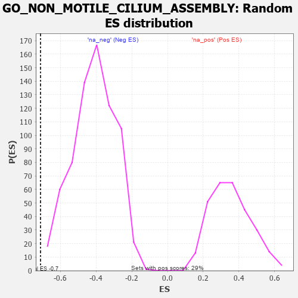

| | | Dataset | 7d |
| Phenotype | NoPhenotypeAvailable |
| Upregulated in class | na_neg |
| GeneSet | GO_NON_MOTILE_CILIUM_ASSEMBLY |
| Enrichment Score (ES) | -0.71105504 |
| Normalized Enrichment Score (NES) | -1.7300458 |
| Nominal p-value | 0.0 |
| FDR q-value | 0.029884165 |
| FWER p-Value | 0.833 |
Table: GSEA Results Summary
 Fig 1: Enrichment plot: GO_NON_MOTILE_CILIUM_ASSEMBLY
Fig 1: Enrichment plot: GO_NON_MOTILE_CILIUM_ASSEMBLY
Profile of the Running ES Score & Positions of GeneSet Members on the Rank Ordered List
| PROBE | GENE SYMBOL | GENE_TITLE | RANK IN GENE LIST | RANK METRIC SCORE | RUNNING ES | CORE ENRICHMENT | | 1 | EXOC5 | | | 3574 | 0.064 | -0.4438 | No |
| 2 | POC1A | | | 4768 | -0.151 | -0.5807 | No |
| 3 | BBS4 | | | 5806 | -0.407 | -0.6757 | Yes |
| 4 | DCTN1 | | | 5950 | -0.454 | -0.6544 | Yes |
| 5 | CENPJ | | | 5968 | -0.460 | -0.6167 | Yes |
| 6 | IFT80 | | | 6135 | -0.515 | -0.5930 | Yes |
| 7 | IFT52 | | | 6280 | -0.566 | -0.5621 | Yes |
| 8 | IFT57 | | | 6307 | -0.579 | -0.5152 | Yes |
| 9 | IFT88 | | | 6335 | -0.590 | -0.4674 | Yes |
| 10 | BBS2 | | | 6383 | -0.608 | -0.4207 | Yes |
| 11 | BBS1 | | | 6397 | -0.616 | -0.3690 | Yes |
| 12 | MKS1 | | | 6607 | -0.715 | -0.3333 | Yes |
| 13 | TTC8 | | | 6682 | -0.753 | -0.2774 | Yes |
| 14 | C2CD3 | | | 6783 | -0.802 | -0.2204 | Yes |
| 15 | PIBF1 | | | 7049 | -0.966 | -0.1701 | Yes |
| 16 | BBS7 | | | 7089 | -0.988 | -0.0893 | Yes |
| 17 | IFT74 | | | 7211 | -1.085 | -0.0105 | Yes |
| 18 | CEP89 | | | 7354 | -1.223 | 0.0776 | Yes |
Table: GSEA details [plain text format]

Fig 2: GO_NON_MOTILE_CILIUM_ASSEMBLY: Random ES distribution
Gene set null distribution of ES for GO_NON_MOTILE_CILIUM_ASSEMBLY